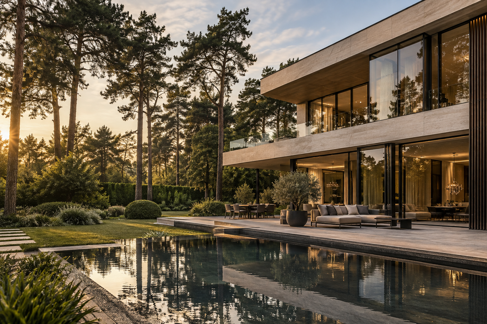

Инвестиции · 8 минут чтения
Почему загородный дом снова стал главным активом семьи
Загородная недвижимость больше не воспринимается как сезонная альтернатива городской квартире. Сегодня дом — это пространство для работы, отдыха и семьи, которое должно быть удобным каждый день и сохранять свою ценность.
Адрес как основа стоимости
Устойчивый спрос сохраняется в посёлках с понятной инфраструктурой, коротким маршрутом до города и сформированной природной средой. Взрослые деревья и сложившееся окружение невозможно воспроизвести за один строительный сезон, поэтому они влияют на ценность резиденции не меньше архитектуры.
- приватность без изоляции от городской жизни;
- архитектура для круглогодичного сценария;
- прозрачная история владения и профессиональная эксплуатация.
«Дом должен давать ощущение тишины, не требуя компромиссов в повседневной жизни».
Что покупатель оценивает в первую очередь
После локации приходит время планировки. Лучшие резиденции легко читаются: общая зона объединена с садом, приватные комнаты разнесены, а сервисные процессы не пересекаются с жизнью семьи.
Проверьте детали до сделки
Оцените инсоляцию, инженерные системы, качество подъездной дороги и состав окружения. Эти нюансы редко видны на первой встрече, но именно они определяют комфорт владения через несколько лет.